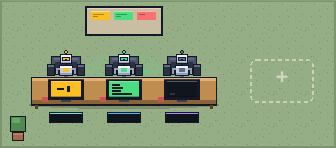

Open a folder
Any project becomes a room. Every Claude Code session in it appears as a robot at a desk, including the ones already on your disk.
+ project
airoom turns every project into a room and every Claude Code session into a robot at a desk. See what all of them are doing at a glance, drop into any conversation, and approve what they want to run, from one screen.
macOS and Windows · free and open source · no account, no key
Nothing to configure and nothing to learn. If you can read a room, you can run this.
Any project becomes a room. Every Claude Code session in it appears as a robot at a desk, including the ones already on your disk.
Green is working, amber is waiting on you, red is blocked, dark is idle. Count what needs you from across the room.


Click a desk and the conversation opens. Allow or deny the exact command. Undecided requests auto-deny after ten minutes.
npm test -- ingest
Every room is a project. Every robot is a Claude Code session on your disk. Everything else is one click away.
One task, one rug, a team on it. The lead splits the work across the bench. Every handoff reads as a single line, and you choose how far the team may run alone. Every member is still a robot at a desk: click it and talk, even mid-task.

Ship the CSV export
Take the writer first: server/export.ts
Done. 6 files, tests pass
Read it. Mind the edge cases
One real find: empty rows drop the header
Click a desk and that conversation opens. Send a follow-up, queue a message while it works, or stop a run mid-flight.
server/ingest.ts. I'll add a token bucket keyed by API key, then run the tests.When an agent needs a decision it walks to its door, the icon by your clock changes, and your system notifies you.
airoom reads your Claude Code sessions from your own disk and talks to a server that only listens on 127.0.0.1. Your code, prompts and transcripts never leave it.
Agents run on your existing Claude subscription. airoom drives the Claude Code you already have installed and signed in.
The office runs on your real clock: desks light the room after dark. When an agent needs a decision it walks to its door, the icon by your clock changes, and your system notifies you. Click the notification and you land in the right conversation.

Wants to run npm test -- ingest
Download and use everything, at home or at work: no account, no key, no clock. The code is on GitHub under Apache 2.0. If airoom earns its place, sponsor it.
v0.1.17 · needs Claude Code · Apache 2.0
Running airoom across a team? A hosted office that several machines report into is next, and it will be the paid part.
Yes. airoom drives the Claude Code you already have, installed and signed in. Agents run as you, on your existing Claude subscription.
No. airoom reads your sessions from your own disk and talks to a server that only listens on 127.0.0.1. Your code, prompts and transcripts never leave it.
Nothing. airoom is open source under Apache 2.0 and free for anyone, at home or at work: no account, no key, no trial. If it earns its place, sponsor it.
Not yet. Today every copy of airoom shows the sessions on its own machine. A hosted office that several people's machines report into is what comes next, and it will be the paid part — leave your email and you will get one message when it opens.
macOS 13 or newer on Apple Silicon, certified by Apple. Windows 11 on x64 is a beta: Windows may say the publisher is unknown while our certificate is pending.
Undecided requests auto-deny after ten minutes, so nothing runs because you stepped out.